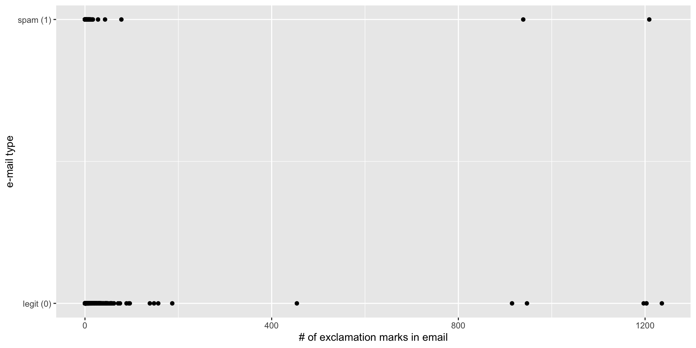
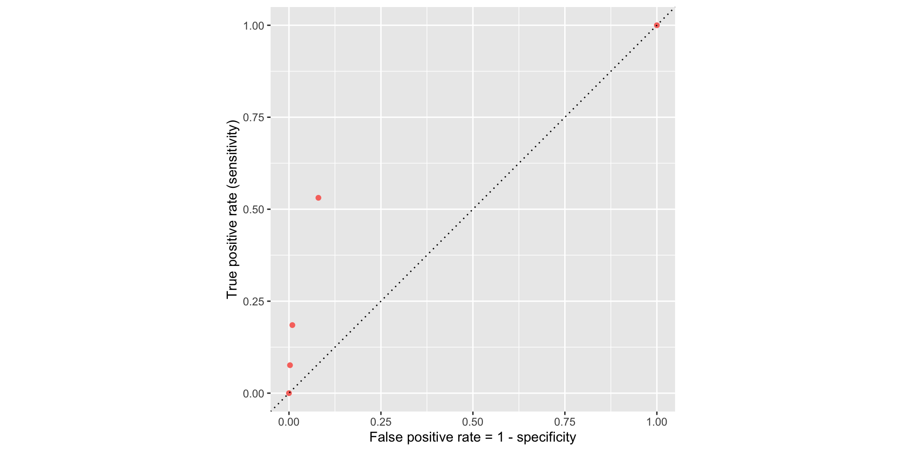
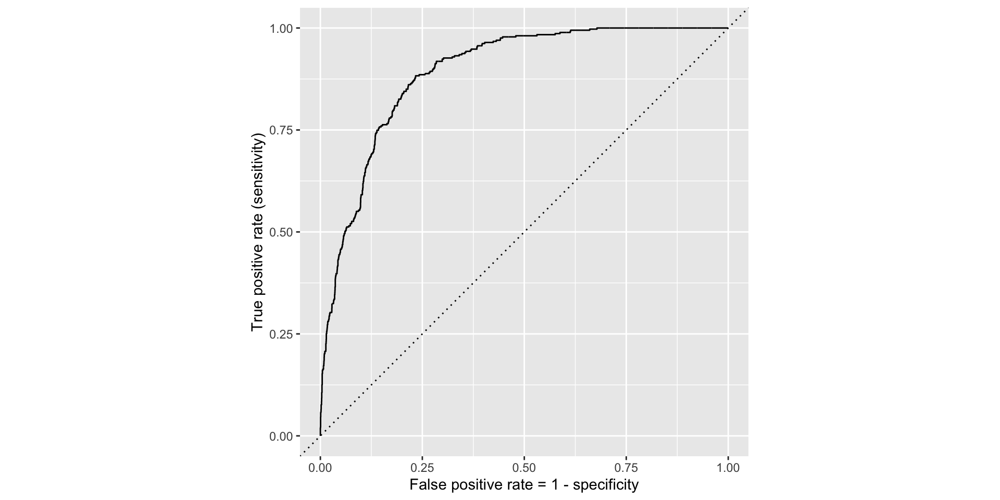
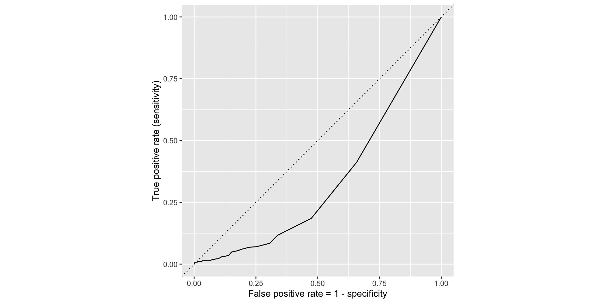
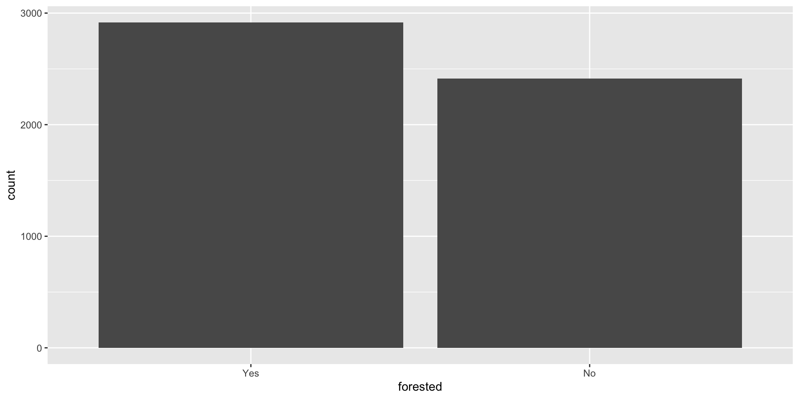
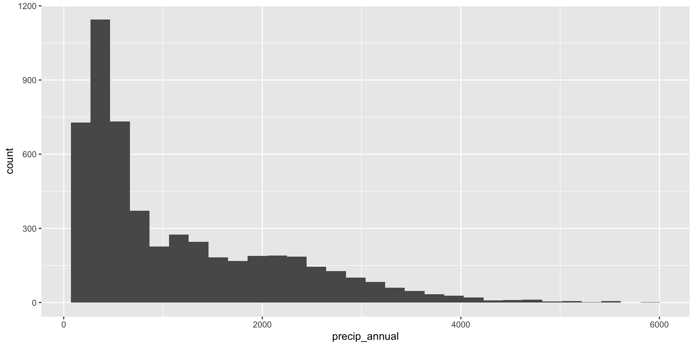
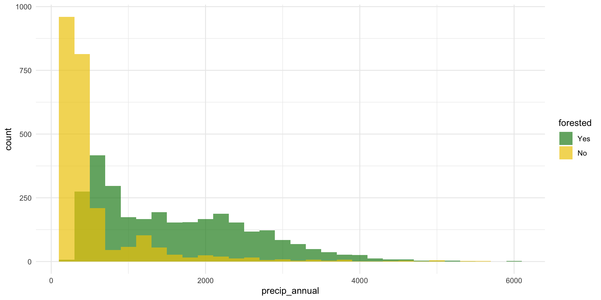
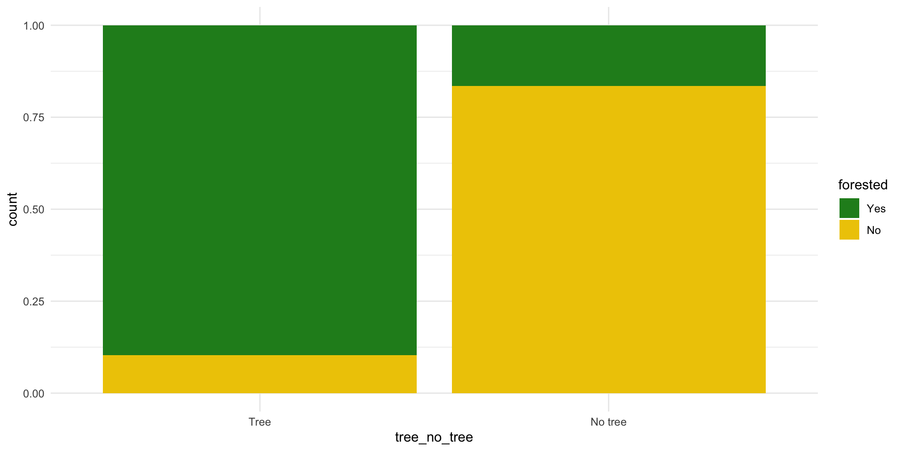
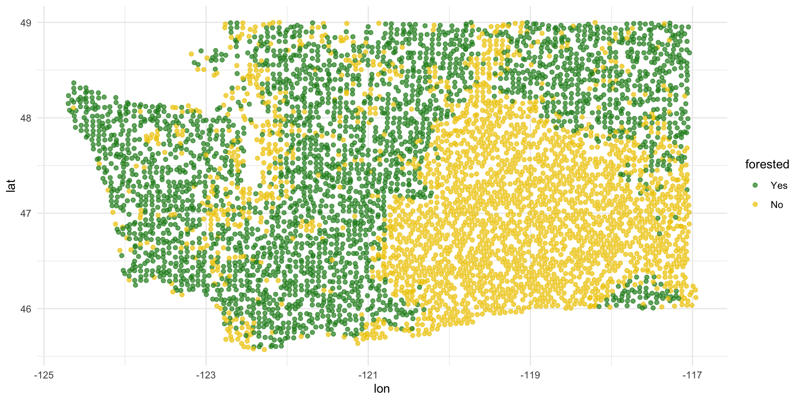
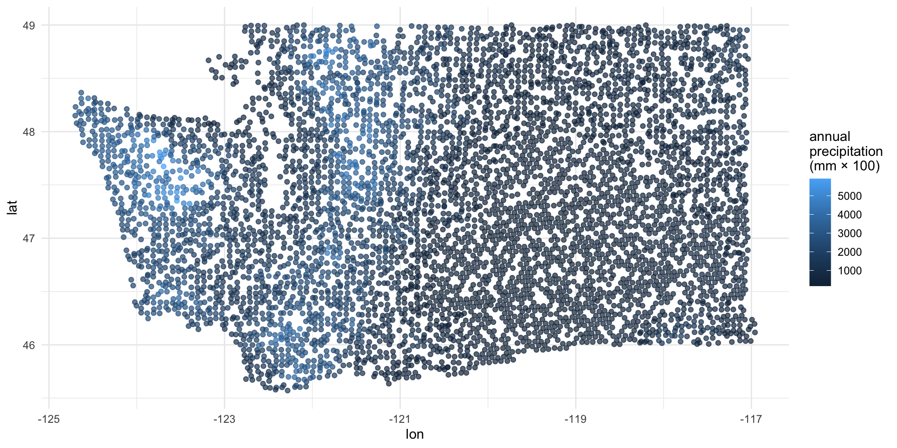

Logistic regression 2
Lecture 20
While you wait: Participate 📱💻
What is your comfort level with mathematics?
- Very low
- Low
- Average
- High
- Very high
Scan the QR code or go HERE. Log in with your Duke NetID.
Reminders
StatSci House Course next Fall
Statistical Methods in Research
- Monday 7:00-8:30 PM;
- Taught by the oldest broads in the stats mafia, Cooper Ruffing and our own Liane Ma.
- Reading and discussion course;
- Celebrate and/or roast the statistical methods and reasoning is published research articles.
SSMU Data Mini
The old broads strike again:
- Like DataFest, only mini;
- Saturday April 11 11am - 5:30pm
- Register by tomorow.
Duke Business Behind Health Conference

- Saturday April 11
- At the business school
- Do some fancy networking!
Wind Symphony tomorrow!
- Thursday, April 2 7:30 pm - 9:00 pm;
- Baldwin Auditorium (East)
- Programming is always very colorful and interesting;
- Many past and present JZ students.
Ragtime this weekend!
Course admin
HW 6
- 5 Qs on linear reg; 5 Qs on logistic reg;
- Due Monday April 6 @ 11:59 pm;
- Thereafter, the usual late penalties apply;
- All ten questions AI-enabled for immediate feedback;
- Later, Humans grade the second half like usual.
Midterm 2
- Similar format, length, style to Midterm 1;
- Study guide goes up tomorrow; solutions Monday;
- Weight falls squarely on material since spring break;
- Logistic regression is fair game, but I’m sensitive to the fact that it is still quite new.
Recap
Last time: regression with a binary response
\[ y = \begin{cases} 1 & &&\text{eg. Yes, Win, True, Heads, Success, Spam}\\ 0 & &&\text{eg. No, Lose, False, Tails, Failure, Legit}. \end{cases} \]
New model: logistic regression
S-curve for the probability of “success”:
\[ \hat{p} = \widehat{\text{Prob}(y=1)} = \frac{e^{b_0+b_1x}}{1+e^{b_0+b_1x}}. \]
Linear model for the log-odds:
\[ \log\left(\frac{\hat{p}}{1-\hat{p}}\right) = b_0+b_1x. \]
These are equivalent.
R syntax is largely unchanged
Just use logistic_reg instead of linear_reg:
. . .
simple_logistic_fit <- logistic_reg() |>
fit(spam ~ exclaim_mess, data = email)
tidy(simple_logistic_fit)# A tibble: 2 × 5
term estimate std.error statistic p.value
<chr> <dbl> <dbl> <dbl> <dbl>
1 (Intercept) -2.27 0.0553 -41.1 0
2 exclaim_mess 0.000272 0.000949 0.287 0.774. . .
Fitted equation for the log-odds:
\[ \log\left(\frac{\hat{p}}{1-\hat{p}}\right) = -2.27 + 0.000272\times exclaim~mess \]
Interpretations are strange and delicate
If
exclaim_mess = 0, then \[ \hat{p}=\widehat{P(y=1)}=\frac{e^{-2.27}}{1+e^{-2.27}}\approx 0.09. \] So, our model predicts that an email with no exclamation marks has a 9% probability of being spam.If the email has an additional exclamation mark, we predict the odds of the email being spam to be higher by a factor of \(e^{0.000272}\approx 1.000272\).
. . .
(the odds are higher because the scale factor is greater than one. If it had been 0.98, then the odds shrink)
Use the exp function to compute
Here’s an alternative model
Dump all the predictors in:
full_logistic_fit <- logistic_reg() |>
fit(spam ~ ., data = email)
tidy(full_logistic_fit)# A tibble: 22 × 5
term estimate std.error statistic p.value
<chr> <dbl> <dbl> <dbl> <dbl>
1 (Intercept) -9.09e+1 9.80e+3 -0.00928 9.93e- 1
2 to_multiple1 -2.68e+0 3.27e-1 -8.21 2.25e-16
3 from1 -2.19e+1 9.80e+3 -0.00224 9.98e- 1
4 cc 1.88e-2 2.20e-2 0.855 3.93e- 1
5 sent_email1 -2.07e+1 3.87e+2 -0.0536 9.57e- 1
6 time 8.48e-8 2.85e-8 2.98 2.92e- 3
7 image -1.78e+0 5.95e-1 -3.00 2.73e- 3
8 attach 7.35e-1 1.44e-1 5.09 3.61e- 7
9 dollar -6.85e-2 2.64e-2 -2.59 9.64e- 3
10 winneryes 2.07e+0 3.65e-1 5.67 1.41e- 8
# ℹ 12 more rowsClassification error
There are two kinds of mistakes:

We want to avoid both, but there’s a trade-off.
Jargon: False negative and positive
False negative rate is the proportion of actual positives that were classified as negatives.
False positive rate is the proportion of actual negatives that were classified as positives.
Tip
We want these to be low!
Jargon: Sensitivity
Sensitivity is the proportion of actual positives that were correctly classified as positive.
Also known as true positive rate and recall
Sensitivity = 1 − False negative rate
Useful when false negatives are more “expensive” than false positives
Tip
We want this to be high!
Jargon: Specificity
Specificity is the proportion of actual negatives that were correctly classified as negative
Also known as true negative rate
Specificity = 1 − False positive rate
Tip
We want this to be high!
The augment function
The augment function takes a data frame and “augments” it by adding three new columns on the left that describe the model predictions for each row:
-
.pred_class: model prediction (\(\hat{y}\)) based on a 50% threshold; -
.pred_0: model estimate of \(P(y=0)\); -
.pred_1: model estimate of \(P(y=1) = 1 - P(y = 0)\).
The augment function
The augment function takes a data frame and “augments” it by adding three new columns on the left that describe the model predictions for each row:
log_aug_full <- augment(full_logistic_fit, email)
log_aug_full# A tibble: 3,921 × 24
.pred_class .pred_0 .pred_1 spam to_multiple from cc sent_email
<fct> <dbl> <dbl> <fct> <fct> <fct> <int> <fct>
1 0 0.867 1.33e- 1 0 0 1 0 0
2 0 0.943 5.70e- 2 0 0 1 0 0
3 0 0.942 5.78e- 2 0 0 1 0 0
4 0 0.920 7.96e- 2 0 0 1 0 0
5 0 0.903 9.74e- 2 0 0 1 0 0
6 0 0.901 9.87e- 2 0 0 1 0 0
7 0 1.000 7.89e-12 0 1 1 0 1
8 0 1.000 1.24e-12 0 1 1 1 1
9 0 0.862 1.38e- 1 0 0 1 0 0
10 0 0.922 7.76e- 2 0 0 1 0 0
# ℹ 3,911 more rows
# ℹ 16 more variables: time <dttm>, image <dbl>, attach <dbl>, dollar <dbl>,
# winner <fct>, inherit <dbl>, viagra <dbl>, password <dbl>, num_char <dbl>,
# line_breaks <int>, format <fct>, re_subj <fct>, exclaim_subj <dbl>,
# urgent_subj <fct>, exclaim_mess <dbl>, number <fct>Calculating the error rates
log_aug_full |>
count(spam, .pred_class) # A tibble: 4 × 3
spam .pred_class n
<fct> <fct> <int>
1 0 0 3521
2 0 1 33
3 1 0 299
4 1 1 68Calculating the error rates
log_aug_full |>
count(spam, .pred_class) |>
group_by(spam)# A tibble: 4 × 3
# Groups: spam [2]
spam .pred_class n
<fct> <fct> <int>
1 0 0 3521
2 0 1 33
3 1 0 299
4 1 1 68Calculating the error rates
log_aug_full |>
count(spam, .pred_class) |>
group_by(spam) |>
mutate(p = n / sum(n))# A tibble: 4 × 4
# Groups: spam [2]
spam .pred_class n p
<fct> <fct> <int> <dbl>
1 0 0 3521 0.991
2 0 1 33 0.00929
3 1 0 299 0.815
4 1 1 68 0.185 Calculating the error rates
log_aug_full |>
count(spam, .pred_class) |>
group_by(spam) |>
mutate(
p = n / sum(n),
decision = case_when(
spam == "0" & .pred_class == "0" ~ "True negative",
spam == "0" & .pred_class == "1" ~ "False positive",
spam == "1" & .pred_class == "0" ~ "False negative",
spam == "1" & .pred_class == "1" ~ "True positive"
))# A tibble: 4 × 5
# Groups: spam [2]
spam .pred_class n p decision
<fct> <fct> <int> <dbl> <chr>
1 0 0 3521 0.991 True negative
2 0 1 33 0.00929 False positive
3 1 0 299 0.815 False negative
4 1 1 68 0.185 True positive But wait!
If we change the classification threshold, we change the classifications, and we change the error rates:
Classification threshold: 0.00
Classification threshold: 0.25
Classification threshold: 0.5
Classification threshold: 0.75
Classification threshold: 1.00
Let’s plot these error rates

ROC curve
If we repeat this process for “all” possible thresholds \(0\leq p^\star\leq 1\), we trace out the receiver operating characteristic curve (ROC curve), which assesses the model’s performance across a range of thresholds:

ROC curve
Which corner of the plot indicates the best model performance?

. . .
Upper left!
ROC for full model

ROC for simple model

Comparing these two curves, the full model is better.
Model comparison
The farther up and to the left the ROC curve is, the better the classification accuracy. You can quantify this with the area under the curve.
Note
Area under the ROC curve will be our “quality score” for comparing logistic regression models.
Washington forests
Data
The U.S. Forest Service maintains machine learning models to predict whether a plot of land is “forested.”
This classification is important for research, legislation, land management, etc. purposes.
Plots are typically remeasured every 10 years.
The
foresteddataset contains the most recent measurement per plot.
Data: forested
forested# A tibble: 7,107 × 20
forested year elevation eastness northness roughness tree_no_tree dew_temp
<fct> <dbl> <dbl> <dbl> <dbl> <dbl> <fct> <dbl>
1 Yes 2005 881 90 43 63 Tree 0.04
2 Yes 2005 113 -25 96 30 Tree 6.4
3 No 2005 164 -84 53 13 Tree 6.06
4 Yes 2005 299 93 34 6 No tree 4.43
5 Yes 2005 806 47 -88 35 Tree 1.06
6 Yes 2005 736 -27 -96 53 Tree 1.35
7 Yes 2005 636 -48 87 3 No tree 1.42
8 Yes 2005 224 -65 -75 9 Tree 6.39
9 Yes 2005 52 -62 78 42 Tree 6.5
10 Yes 2005 2240 -67 -74 99 No tree -5.63
# ℹ 7,097 more rows
# ℹ 12 more variables: precip_annual <dbl>, temp_annual_mean <dbl>,
# temp_annual_min <dbl>, temp_annual_max <dbl>, temp_january_min <dbl>,
# vapor_min <dbl>, vapor_max <dbl>, canopy_cover <dbl>, lon <dbl>, lat <dbl>,
# land_type <fct>, county <fct>Data: forested
glimpse(forested)Rows: 7,107
Columns: 20
$ forested <fct> Yes, Yes, No, Yes, Yes, Yes, Yes, Yes, Yes, Yes, Yes,…
$ year <dbl> 2005, 2005, 2005, 2005, 2005, 2005, 2005, 2005, 2005,…
$ elevation <dbl> 881, 113, 164, 299, 806, 736, 636, 224, 52, 2240, 104…
$ eastness <dbl> 90, -25, -84, 93, 47, -27, -48, -65, -62, -67, 96, -4…
$ northness <dbl> 43, 96, 53, 34, -88, -96, 87, -75, 78, -74, -26, 86, …
$ roughness <dbl> 63, 30, 13, 6, 35, 53, 3, 9, 42, 99, 51, 190, 95, 212…
$ tree_no_tree <fct> Tree, Tree, Tree, No tree, Tree, Tree, No tree, Tree,…
$ dew_temp <dbl> 0.04, 6.40, 6.06, 4.43, 1.06, 1.35, 1.42, 6.39, 6.50,…
$ precip_annual <dbl> 466, 1710, 1297, 2545, 609, 539, 702, 1195, 1312, 103…
$ temp_annual_mean <dbl> 6.42, 10.64, 10.07, 9.86, 7.72, 7.89, 7.61, 10.45, 10…
$ temp_annual_min <dbl> -8.32, 1.40, 0.19, -1.20, -5.98, -6.00, -5.76, 1.11, …
$ temp_annual_max <dbl> 12.91, 15.84, 14.42, 15.78, 13.84, 14.66, 14.23, 15.3…
$ temp_january_min <dbl> -0.08, 5.44, 5.72, 3.95, 1.60, 1.12, 0.99, 5.54, 6.20…
$ vapor_min <dbl> 78, 34, 49, 67, 114, 67, 67, 31, 60, 79, 172, 162, 70…
$ vapor_max <dbl> 1194, 938, 754, 1164, 1254, 1331, 1275, 944, 892, 549…
$ canopy_cover <dbl> 50, 79, 47, 42, 59, 36, 14, 27, 82, 12, 74, 66, 83, 6…
$ lon <dbl> -118.6865, -123.0825, -122.3468, -121.9144, -117.8841…
$ lat <dbl> 48.69537, 47.07991, 48.77132, 45.80776, 48.07396, 48.…
$ land_type <fct> Tree, Tree, Tree, Tree, Tree, Tree, Non-tree vegetati…
$ county <fct> Ferry, Thurston, Whatcom, Skamania, Stevens, Stevens,…Outcome and predictors
- Outcome:
forested- Factor,YesorNo
levels(forested$forested)[1] "Yes" "No" -
Predictors: 18 remotely-sensed and easily-accessible predictors:
numeric variables based on weather and topography
categorical variables based on classifications from other governmental organizations
?forested
Should we include a predictor?
To determine whether we should include a predictor in a model, we should start by asking:
Is it ethical to use this variable? (Or even legal?)
Will this variable be available at prediction time?
Does this variable contribute to explainability?
Data splitting and spending
We’ve been cheating!
So far, we’ve been using all the data we have for building models. In predictive contexts, this would be considered cheating.
Evaluating model performance for predicting outcomes that were used when building the models is like evaluating your learning with questions whose answers you’ve already seen.
Spending your data
For predictive models (used primarily in machine learning), we typically split data into training and test sets:

The training set is used to estimate model parameters.
The test set is used to find an independent assessment of model performance.
. . .
Warning
Do not use, or even peek at, the test set during training.
How much to spend?
The more data we spend (use in training), the better estimates we’ll get.
Spending too much data in training prevents us from computing a good assessment of predictive performance.
Spending too much data in testing prevents us from computing a good estimate of model parameters.
The initial split
set.seed(20241112)
forested_split <- initial_split(forested)
forested_split<Training/Testing/Total>
<5330/1777/7107>Setting a seed
What does set.seed() do?
To create that split of the data, R generates “pseudo-random” numbers: while they are made to behave like random numbers, their generation is deterministic given a “seed”.
This allows us to reproduce results by setting that seed.
Which seed you pick doesn’t matter, as long as you don’t try a bunch of seeds and pick the one that gives you the best performance.
Accessing the data
forested_train <- training(forested_split)
forested_test <- testing(forested_split)The training set
forested_train# A tibble: 5,330 × 20
forested year elevation eastness northness roughness tree_no_tree dew_temp
<fct> <dbl> <dbl> <dbl> <dbl> <dbl> <fct> <dbl>
1 Yes 2013 315 -17 98 92 Tree 5.83
2 No 2018 374 93 -34 23 No tree 0.7
3 No 2017 377 44 -89 1 Tree 1.83
4 Yes 2013 541 31 -94 139 Tree 4.19
5 Yes 2017 680 14 -98 20 Tree 0.79
6 Yes 2017 1482 76 -64 43 Tree -0.18
7 No 2020 84 42 -90 12 No tree 6.9
8 Yes 2011 210 34 93 16 Tree 5.52
9 No 2020 766 14 98 20 No tree 1.52
10 Yes 2013 1559 98 16 79 Tree -3.45
# ℹ 5,320 more rows
# ℹ 12 more variables: precip_annual <dbl>, temp_annual_mean <dbl>,
# temp_annual_min <dbl>, temp_annual_max <dbl>, temp_january_min <dbl>,
# vapor_min <dbl>, vapor_max <dbl>, canopy_cover <dbl>, lon <dbl>, lat <dbl>,
# land_type <fct>, county <fct>The testing data
forested_test# A tibble: 1,777 × 20
forested year elevation eastness northness roughness tree_no_tree dew_temp
<fct> <dbl> <dbl> <dbl> <dbl> <dbl> <fct> <dbl>
1 Yes 2005 881 90 43 63 Tree 0.04
2 Yes 2005 636 -48 87 3 No tree 1.42
3 Yes 2005 2240 -67 -74 99 No tree -5.63
4 Yes 2014 940 -93 35 50 Tree -0.15
5 No 2014 246 22 -97 5 Tree 2.41
6 No 2014 419 86 -49 5 No tree 1.87
7 No 2014 308 -70 -70 4 No tree 3.07
8 No 2014 302 -31 -94 1 No tree 2.55
9 No 2014 340 -54 83 60 No tree 1.29
10 No 2014 792 -61 -79 30 No tree 0.25
# ℹ 1,767 more rows
# ℹ 12 more variables: precip_annual <dbl>, temp_annual_mean <dbl>,
# temp_annual_min <dbl>, temp_annual_max <dbl>, temp_january_min <dbl>,
# vapor_min <dbl>, vapor_max <dbl>, canopy_cover <dbl>, lon <dbl>, lat <dbl>,
# land_type <fct>, county <fct>Exploratory data analysis
Initial questions
What’s the distribution of the outcome,
forested?What’s the distribution of numeric variables like
precip_annual?How does the distribution of forested differ across the categorical and numerical variables?
. . .
Which dataset should we use for the exploration? The entire data forested, the training data forested_train, or the testing data forested_test?
forested
What’s the distribution of the outcome, forested?
ggplot(forested_train, aes(x = forested)) +
geom_bar()
forested
What’s the distribution of the outcome, forested?
forested_train |>
count(forested) |>
mutate(
p = n / sum(n)
)# A tibble: 2 × 3
forested n p
<fct> <int> <dbl>
1 Yes 2917 0.547
2 No 2413 0.453precip_annual
What’s the distribution of precip_annual?
ggplot(forested_train, aes(x = precip_annual)) +
geom_histogram()
forested and precip_annual
ggplot(
forested_train,
aes(x = precip_annual, fill = forested, group = forested)
) +
geom_histogram(binwidth = 200, position = "identity", alpha = 0.7) +
scale_fill_manual(values = c("Yes" = "forestgreen", "No" = "gold2")) +
theme_minimal()
forested and precip_annual
forested and tree_no_tree
ggplot(forested_train, aes(x = tree_no_tree, fill = forested)) +
geom_bar(position = "fill") +
scale_fill_manual(values = c("Yes" = "forestgreen", "No" = "gold2")) +
theme_minimal()
forested and lat / lon
ggplot(forested_train, aes(x = lon, y = lat, color = forested)) +
geom_point(alpha = 0.7) +
scale_color_manual(values = c("Yes" = "forestgreen", "No" = "gold2")) +
theme_minimal()
precip_annual and lat / lon
ggplot(forested_train, aes(x = lon, y = lat, color = precip_annual)) +
geom_point(alpha = 0.7) +
labs(color = "annual\nprecipitation\n(mm × 100)") +
theme_minimal()
Two warnings about logistic regression
FYI: the response variable must be a factor
forested already comes as a factor, so we’re lucky:
. . .
But if it didn’t, things would not work:
logistic_reg() |>
fit(as.numeric(forested) ~ precip_annual, data = forested_train)Error in `check_outcome()`:
! For a classification model, the outcome should be a <factor>, not a
double vector.FYI: the base level is treated as “failure” (0)
The base level here is “Yes”, so “No” is treated as “success” (1):
levels(forested$forested)[1] "Yes" "No" . . .
As a result, this code:
logistic_reg() |>
fit(forested ~ precip_annual, data = forested_train). . .
Corresponds to this model:
\[ \text{Prob}( \texttt{forested = "No"} ) = \frac{e^{\beta_0+\beta_1 x}}{1 + e^{\beta_0+\beta_1 x}}. \]
. . .
This is not a problem, but it means that in order to interpret the output correctly, you need to understand how your factors are leveled.
Don’t get burned on this!
There are two distinct but related things going on at the same time:
- Your binary response variable is a factor with two levels. There is a first level (base) and a second level;
- In the context of your application, one of those levels is the “negative” or “zero” case (legit e-mail) and one is the “positive” or “one” case (spam e-mail).
. . .
Do these two things agree? If not, that isn’t an error, but you might make mistakes when interpreting. Be careful!
Today’s AE
Next steps
Fit models on training data
Make predictions on testing data
-
Evaluate predictions on testing data:
- Linear models: R-squared, adjusted R-squared, RMSE (root mean squared error), etc.
- Logistic models: False negative and positive rates, AUC (area under the curve), etc.
Make decisions based on model predictive performance, validity across various testing/training splits (aka “cross validation”), explainability
. . .
Note
We will only learn about a subset of these in this course, but you can go further into these ideas in STA 210 or STA 221 as well as in various machine learning courses.
ae-20-forest-classification
Go to your ae project in RStudio.
If you haven’t yet done so, make sure all of your changes up to this point are committed and pushed, i.e., there’s nothing left in your Git pane.
If you haven’t yet done so, click Pull to get today’s application exercise file: ae-20-forest-classification.qmd. You might be prompted to install forested, say yes.
Work through the application exercise in class, and render, commit, and push your edits.